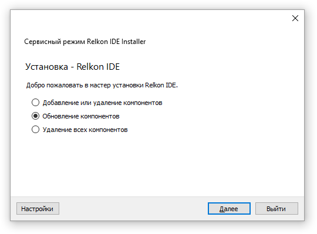

В каталоге где установлена среда Relkon IDE расположен файл maintenancetool.exe. С его помощью можно обновлять состояние программного обеспечения до последней актуальной версии по сети Internet. На сайте www.kontel.ru хранятся обновления для среды. Программа maintenancetool позволяет проверить наличие новых обновлений и при необходимости закачать их. При запуске необходимо выбрать пункт "обновление" и нажать кнопку "далее". Если обновления будут доступны программа выведет список обновлений и предложит их установить.
